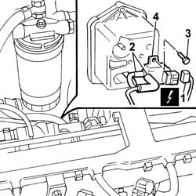

1060G56 SOLENOID VALVE ON VACUUM RESERVOIR FOR PNEUMATIC VALVE - R.R.
- Path
- Procedures > 10 ENGINE > 1060 DIESEL FUEL INJECTION SYSTEM > 1060G DIESEL INJECTION PRESSURE PUMP ELECTRONIC CONTROL > 1060G56 SOLENOID VALVE ON VACUUM RESERVOIR FOR PNEUMATIC VALVE - R.R.
- Kind
- repair procedure (removal / refitting; the operation number is the code)
- Applies to
- engines: 2.4 JTD 10V; all production periods
- Interactive page
- https://sloeber94.github.io/elrnDB-lThss/en/#/101922
Applies to: all engines; all production periods
 Removing
Removing
 Refitting
RefittingSee in Op. 1016A10
1. Disconnect the electrical connection.
 | Description | Connector |
|---|---|---|
1 | Throttle body solenoid valve | L062 |
2. Disconnect the vacuum pipes from the connectors on the solenoid valve.
3. Undo the bolt fixing the solenoid valve to the vacuum reservoir.
4. Remove the solenoid valve from the engine.

Applies to: all engines; all production periods
Refitting
Removing- Position the solenoid valve in the housing on the vacuum reservoir.
- Tighten the fixing bolt and connect the vacuum pipes to it.
- Connect the electrical connection.
| Description | Connector |
|---|---|---|
. | Throttle body solenoid valve | L062 |
See in Op. 1016A10